전자계산기조직응용기사 (2008-03-02 기출문제)
1과목: 전자계산기 프로그래밍
1. 어셈블리어에서 주석(Comment)의 시작을 나타내는 기호는?
- ;
- #
- %
- $
(정답률: 95%)

2. 정적 바인딩(Static binding)에 대한 설명으로 옳지 않은 것은?
- 실행 이전에 일어나는 바인딩이다.
- 정적(Static) 속성을 가진다.
- 언어 번역시간은 정적 바인딩이 이루어진다.
- 일명 후기 바인딩(late binding)이라고 한다.
(정답률: 58%)
3. PC 어셈블리어에서 DOS 나 BIOS 루틴을 부르기 위해 사용하는 명령은?
- INT
- TITLE
- INC
- REP
(정답률: 85%)
4. 원시프로그램을 번역할 때 어셈블러에게 요구되는 동작을 지시하는 명령으로서 기계어로 번역되지 않는 명령어를 무엇이라 하는가?
- 매크로 명령(macro instruction)
- 기계어 명령(machine instruction)
- 의사 명령(pseudo instruction)
- 오퍼랜드 명령(operand instruction)
(정답률: 87%)
5. 객체지향 언어의 개념에서 객체가 메시지를 받아 실행해야 할 구체적인 연산을 정의한 것은?
- 캡슐활
- 인스턴스
- 클래스
- 메소드
(정답률: 91%)
6. 객체 지향 기법에서 데이터와 이 데이터를 조작하는 연산들이 하나의 모듈 내에서 결합되도록 하는 것을 무엇이라 하는가?
- 클래스
- 메소드
- 캡슐화
- 객체
(정답률: 79%)
7. 고급언어로 작성한 프로그램을 기계어로 번역하였다. 번역 도중에 발생한 문법에러를 모두 수정하여 실행 파일을 만들었으나 실행 결과가 정확하지 않았다. 어떤 프로그램을 이용하면 논리적인 문제점을 검토할 수 있는가?
- 운영체제(operating system)
- 어셈블러(assembler)
- 디버거(debugger)
- 링커(linker)
(정답률: 96%)
8. PLC에 대한 설명으로 거리가 먼 것은?
- 공정을 생략할 수 있고 기획성이 우수하다.
- 반도체와 IC를 이용한 제품이므로 제어반의 크기를 줄일 수 있다.
- 소규모 제어회로에서 가격이 싸다.
- 신뢰성 및 보수성이 높다.
(정답률: 75%)
9. 어셈블리어에서 다음 설명에 해당하는 명령은?
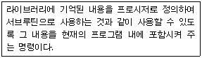
- INCLUDE
- EJECT
- CREF
- ORG
(정답률: 90%)
10. 단항(Unary) 연산자 연산에 해당하지 않는 것은?
- MOVE
- SHIFT
- COMPLEMENT
- AND
(정답률: 87%)
11. C언어의 데이터 형이 아닌 것은?
- long
- integer
- char
- double
(정답률: 87%)
12. 어셈블리어에서 어떤 기호적 이름에 상수 값을 할당하는 명령은?
- EQU
- ASSUME
- ORG
- EVEN
(정답률: 83%)
13. 제어 대상물인 기계가 그림과 같이 여러 대 있는 것을 1대의 PLC로 제어하는 시스템은?
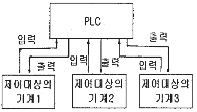
- 버스 시스템
- 집중 시스템
- 분산 시스템
- 계층 시스템
(정답률: 55%)
14. C언어의 관계연산자 중 우선순위가 나머지 셋과 다른 하나는?
- >
- >=
- <
- !=
(정답률: 89%)
15. 논리 곱(AND)을 나타내는 C언어의 연산자는?
- ||
- |
- &&
- &
(정답률: 90%)
16. C 언어에서 사용되는 반복 구조문이 아닌 것은?
- while 문
- do ~ while 문
- for 문
- if ~ else 문
(정답률: 87%)
17. 어셈블리어에서 매크로를 정의할 때 시작부분과 끝 부분에 쓰이는 명령은?
- BEGIN, END
- MACRO, ENDM
- MOPEN, ENDM
- START, END
(정답률: 58%)
18. C 언어에서 문자열 출력 함수는?
- gets()
- puts()
- getchar()
- putchar()
(정답률: 80%)
19. C 언어의 기억클래스 종류가 아닌 것은?
- External
- Static
- Register
- Point
(정답률: 87%)
20. PLC와 릴레이(Relay) 제어의 비교 설명으로 옳지 않은 것은?
- PLC는 프로그램 변경만으로 제어내용의 변경이 가능하지만 릴레이 제어는 배선을 변경하여야 한다.
- PLC 제어는 릴레이 제어보다 많은 도면이 필요하고 부품수배, 조립, 시험에 시간이 많이 걸린다.
- 범용성 면에서 릴레이 제어 보다 PLC 제어가 우수하다.
- 경제성 면에서 릴레이 개수가 많은 경우에는 PLC를 사용하는 것이 경제적이다.
(정답률: 90%)
2과목: 자료구조 및 데이터통신
21. 다음 중 X.25의 접속서비스 기능으로 옳은 것은?
- PRC (Program Recovery Circuit)
- PMC (Performance Maintenance Circuit)
- PAC (Physical Address Circuit)
- PVC (Permanent Virtual Circuit)
(정답률: 68%)
22. 다음 중 정지화상 압축 기술의 표준은?
- MPEG
- JPEG
- H261
- G711
(정답률: 66%)
23. HDLC의 프레임(Frame)의 구조가 순서대로 올바르게 나열된 것은? (단, A : Address, F : Flag, C : Control, D : Data, S : Frame Check Sequence)
- F-D-C-A-S-F
- F-C-D-S-A-F
- F-A-C-D-S-F
- F-A-D-C-S-F
(정답률: 70%)
24. 데이터의 전송률이 1⑤Mbps 정도이고, 전송 중 누화잡음과 충격잡음에 대한 면역성이 좋은 통신선로는?
- 2-선식개방선로
- 꼬임선
- 동축케이블
- 광섬유
(정답률: 66%)
25. OSI 7계층에서 다음과 같은 서비스를 제공하는 계층은?
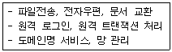
- 데이터 링크 계층
- 물리 계층
- 응용 계층
- 세션 계층
(정답률: 75%)
26. IEEE 802.4의 표준안 내용으로 옳은 것은?
- 토큰 버스 LAN
- 토큰 링 LAN
- CSMA/CD LAN
- 무선 LAN
(정답률: 60%)
27. 다음 중 데이터 통신에 널리 사용되는 오류 검출 기법이 아닌 것은?
- Huffman Coding
- CRC
- Parity Check
- BCC
(정답률: 60%)
28. 보오(baud) 속도가 2400 이고, 한 번에 2개의 비트를 전송 할 때 데이터 신호속도(bps)는 얼마인가?
- 2400
- 4800
- 7200
- 9600
(정답률: 85%)
29. 두 개 이상의 컴퓨터 사이에 데이터 전송을 할 수 있도록 미리 정보의 송?수신측에서 정해둔 통신 규약을 무엇이라 하는가?
- Protocol
- Link
- Terminal
- Interface
(정답률: 85%)
30. ISDN의 정보용 채널인 B채널의 전송 용량은?
- 64kbps
- 16kbps
- 384kbps
- 1536kbps
(정답률: 86%)
31. 선형 자료 구조가 아닌 것은?
- 큐
- 스택
- 데크
- 트리
(정답률: 89%)
32. 다음 트리를 “Pre-order"로 운행한 결과는?
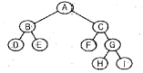
- ABDECFGHi
- DBEFCHGiA
- ABCDEFGHi
- DEBFHiGCA
(정답률: 85%)
33. 데이터베이스 관리 시스템의 필수 기능에 해당하지 않는 것은?
- 정의 기능 (Definition facility)
- 조작 기능 (Manipulation facility)
- 명세 기능 (Specification facility)
- 제어 기능 (Control facility)
(정답률: 91%)
34. 트랜잭션의 특성으로 거리가 먼 것은?
- 원자성(Atomicity)
- 영속성(Durability)
- 격리성(Isolation)
- 무결성(Integrity)
(정답률: 85%)
35. 다음 그림에서 “트리의 차수(Degree)"는?
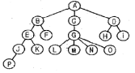
- 2
- 3
- 4
- 5
(정답률: 90%)
36. 주어진 파일에서 인접한 2개의 레코드 키 값을 비교하여 그 크기에 따라 레코드 위치를 서로 교환하는 정렬 방식은 무엇인가?
- 삽입(Insertion)정렬
- 버블(Bubble)정렬
- 퀵(Quick)정렬
- 선택(Selection)정렬
(정답률: 83%)
37. 해싱에 대한 설명으로 옳지 않은 것은?
- 여러 가지 탐색 방법 중 가장 속도가 빠르다.
- 삽입, 삭제의 빈도가 많을 때 유리한 방식이다.
- 충돌 현상이 발생할 수 없으므로 많은 기억 공간이 요구되지 않는다.
- DAM 파일을 구성할 때 사용된다.
(정답률: 70%)
38. 큐(Queue)에 대한 설명으로 옳지 않은 것은?
- 자료의 삽입과 삭제가 Top에서 이루어진다.
- FIFO 방식으로 처리한다.
- Front와 Rear의 포인터 2개를 갖고 있다.
- 운영체제의 작업 스케쥴링시 사용된다.
(정답률: 70%)
39. 인덱스된 순차파일(Indexed Sequential File)의 색인 구역(Index Area)에 해당하지 않는 것은?
- Track index area
- Cylinder index area
- Master index area
- Record index area
(정답률: 69%)
40. 다음 자료에서 “215”를 찾기 위해 이진탐색을 이용할 경우 비교해야 될 횟수는?
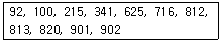
- 2
- 3
- 4
- 5
(정답률: 62%)
3과목: 전자계산기구조
41. BCD 코드 1001에 대한 해밍 코드를 구하면?
- 0011001
- 1000011
- 0100101
- 0110010
(정답률: 44%)
42. 결선 게이트의 특징이 아닌 것은?
- 게이트들의 출력단자를 직접 연결한다.
- 회로 비용을 절감할 수 있다.
- 많은 논리기능을 부여할 수 없다.
- open collector TTL로 게이트들의 출력 단자를 묶어서 사용한다.
(정답률: 80%)
43. CPU가 인스트럭션을 수행하는 순서로 옳은 것은?
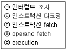
- (ㄷ)→(ㄱ)→(ㄴ)→(ㄹ)→(ㅁ)
- (ㄹ)→(ㄷ)→(ㄴ)→(ㅁ)→(ㄱ)
- (ㄴ)→(ㄷ)→(ㄹ)→(ㅁ)→(ㄱ)
- (ㄷ)→(ㄴ)→(ㄹ)→(ㅁ)→(ㄱ)
(정답률: 43%)
44. 비트 슬라이스 마이크로프로세서( bit sliced microprocessor)의 구성을 잘 설명한 것은?
- CPU를 하나의 IC로 만든 프로세서
- CPU, 기억장치, I/O port가 한 IC에 구성된 프로세서
- processor unit, microprogram sequencer, control memory가 각각 다른 IC로 구성된 프로세서
- processor unit, microprogram sequencer, control memory 가 한 IC로 구성된 프로세서
(정답률: 64%)
45. 소프트웨어 인터럽트 사용시 가장 큰 장점은?
- 우선순위 변경이 쉽다.
- 속도가 빠르다.
- 비용이 비싸다.
- 데이지 체인 방식이다.
(정답률: 73%)
46. 그림과 같은 회로에서 출력 Y는?
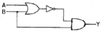
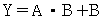
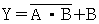
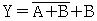
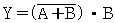
(정답률: 65%)
47. 서로 다른 17개의 정보가 있다. 이 중에서 하나를 선택하려면 최소 몇 개의 비트가 필요한가?
- 3
- 4
- 5
- 17
(정답률: 83%)
48. 스택(Stack)이 사용되는 경우는?
- 인터럽트가 발생할 때
- 분기 명령이 실행될 때
- 무조건 점프 명령어 실행될 때
- 메모리 요구가 받아들여졌을 때
(정답률: 67%)
49. 프로그램에 의해 제어되는 동작이 아닌 것은?
- input/output
- branch
- status sense
- RNI(fetch)
(정답률: 45%)
50. 플립플롭 중 입력단자가 하나이며, “1” 이 입력될 때마다 출력단자의 상태가 바뀌는 것은?
- RS 플립플롭
- T 플립플롭
- D 플립플롭
- M/S 플립플롭
(정답률: 77%)
51. 가상 메모리를 사용한 컴퓨터에서 page fault가 발생하면 어떤 현상이 일어나는가?
- 요구된 page가 주기억장치로 옮겨질 때까지 프로그램 수행이 중단된다.
- 요구된 page가 가상메모리로 옮겨질 때까지 프로그램 수행이 중단된다.
- 현재 실행 중인 프로그램을 종료한 후 시스템이 정지된다.
- page fault라는 에러 메세지를 전송한 후에 시스템이 정지된다.
(정답률: 69%)
52. 데이터 전송 방법 중 스트로브 제어 방법의 설명으로 옳지 않은 것은?
- 전송을 시작한 송신장치가 버스에 놓인 데이터를 수신장치가 받아 들였는지 여부를 알 수 있다.
- 비동기 방식으로 각 전송 시간을 맞추기 위해 단 하나의 제어 라인을 갖는다.
- 스트로브는 송신장치나 수신장치에 의하여 발생된다.
- 수신장치는 스트로브 펄스를 발생시켜 송신부로 하여금 데이터를 제공하도록 알린다.
(정답률: 25%)
53. 내부 인터럽트의 원인이 아닌 것은?
- 정전
- 불법적인 명령의 실행
- overflow 또는 0(Zero)으로 나누는 경우
- 보호 영역내의 메모리 주소를 access 하는 경우
(정답률: 62%)
54. op-code가 4비트이면 연산자의 종류는 몇 개가 생성될 수 있는가?
- 24-1
- 2
- 23
- 23-1
(정답률: 57%)
55. 인스트럭션을 수행하기 위한 메이저 상태에 대한 설명으로 옳은 것은?
- 명령어를 가져오기 위해 기억장치에 접근하는 것을 Fetch 상태라 한다.
- Execute 상태는 간접주소 지정방식의 경우 수행된다.
- CPU의 현재 상태를 보관하기 위한 기억장치 접근을 Indirect상태라 한다.
- 명령어 종류를 판별하는 것을 Indirect 상태라 한다.
(정답률: 53%)
56. RISC(Reduced Instruction Set Computer)와 CISC(Complex Instruction Set Computer)의 특징이 아닌 것은?
- RISC는 명령어 길이가 고정적이다.
- RISC는 하드웨어에 의해 직접 명령어가 수행된다.
- CISC의 수행 속도가 더 빠르다.
- 펜티엄을 포함한 인텔사의 x86 시리즈는 CISC 프로세서이다.
(정답률: 58%)
57. 컴퓨터의 메모리 용량이 16K x 32bit라 하면 MAR(Memory Address Register)와 MBR(Memory Buffer Register)은 각각 몇 비트인가?
- MAR:12, MBR:16
- MAR:32, MBR:14
- MAR:12, MBR:32
- MAR:14, MBR:32
(정답률: 65%)
58. 고속의 입?출력 장치에 사용되는 데이터 전송 방식은?
- 데이터 채널
- I/O 채널
- selector 채널
- multiplexer 채널
(정답률: 50%)
59. 중앙처리장치가 FETCH 상태인 경우에 제어점을 제어하는 것은?
- 플래그(flag)
- 명령어(instruction)
- 인터럽트 호출 신호
- 프로그램 카운터
(정답률: 62%)
60. 64K인 주소 공간(address space)과 4K인 기억공간(memory space)을 가진 컴퓨터인 경우 한 페이지(page)가 512워드로 구성된다면 페이지와 블럭 수는 각각 얼마인가?
- 16페이지 12블럭
- 128페이지 8블럭
- 256페이지 16블럭
- 64페이지 4K블럭
(정답률: 67%)
4과목: 운영체제
61. 가상기억장치(Virtual Memory)에 대한 설명으로 거리가 먼 것은?
- 보조기억장치의 일부 용량을 주기억장치처럼 가상하여 사용할 수 있도록 하는 개념이다.
- 별도의 주소 매핑 작업 없이 가상기억장치에 있는 프로그램을 주기억장치에 적재하여 실행할 수 있다.
- 가상기억장치의 구현은 일반적으로 페이징 기법과 세그먼테이션 기법을 이용한다.
- 주기억장치의 이용율과 다중 프로그래밍의 효율을 높일 수 있다.
(정답률: 72%)
62. 모니터에 대한 설명으로 옳지 않은 것은?
- 모니터의 경계에서 상호배제가 시행된다.
- 자료추상화와 정보은폐 기법을 기초로 한다.
- 공유 데이터와 이 데이터를 처리하는 프로시저로 구성된다.
- 모니터 외부에서도 모니터 내의 데이터를 직접 액세스 할 수 있다.
(정답률: 65%)
63. RR(Round Robin) 스케줄링에 대한 설명으로 옳지 않은 것은?
- Time slice를 크게 하면 입?출력 위주의 작업이나 긴급을 요하는 작업에 신속히 반응하지 못한다.
- Time slice가 작을 경우 FCFS 스케줄링과 같아진다.
- Time Sharing System을 위해 고안된 방식이다.
- Time slice가 작을수록 문맥교환 및 오버헤드가 자주 발생한다.
(정답률: 60%)
64. 운영체제를 기능상 분류할 경우 “Control Program"과 ”Process Program"으로 구분할 수 있다. 다음 중 “Control Program"에 해당하는 것으로만 짝지어진 것은?
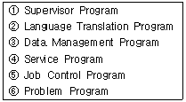
- ②, ④, ⑥
- ①, ③, ⑤
- ①, ⑤, ⑥
- ②, ③, ④
(정답률: 69%)
65. 다음 그림과 같은 구조를 갖는 시스템으로 가장 적합한 것은?
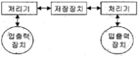
- 약결합 다중 처리 시스템(loosely-coupled multiprocessing system)
- 강결합 다중 처리 시스템(tightly-coupled multiprocessing system)
- 단일버스 다중 처리 시스템(single bus multiprocessing system)
- 공유버스 다중 처리 시스템(shared bus multiprocessing system)
(정답률: 37%)
66. 자식 프로세스의 하나가 종료될 때까지 부모 프로세스를 임시 중지시키는 유닉스 명령어는?
- exit()
- fork()
- exec()
- wait()
(정답률: 65%)
67. 분산 처리 시스템의 위상에 따른 분류에서 한 사이트의 고장이 다른 사이트에 영향을 주지 않지만, 중앙 사이트 고장시 전체 시스템이 정지되는 형태는 무엇인가?
- Tree 구조
- Star 구조
- Ring 구조
- Mesh 구조
(정답률: 72%)
68. 페이지 오류율(Page Fault ratio)과 스래싱(Thrashing)에 대한 설명으로 옳은 것은?
- 페이지 오류율이 크면 스래싱이 많이 발생한 것이다.
- 페이지 오류율과 스래싱은 전혀 관계가 없다.
- 스래싱이 많이 발생하면 페이지 오류율이 감소한다.
- 다중프로그래밍의 정도가 높을수록 페이지 오류율과 스래싱이 감소한다.
(정답률: 57%)
69. 다중 처리기의 운영체제 형태 중 주/종(Master/Slave) 처리기에 대한 설명으로 옳지 않은 것은?
- 주프로세서만이 운영체제를 수행한다.
- 종프로세서는 입?출력 발생시 주프로세서에게 서비스를 요청한다.
- 주프로세서가 고장나면 전체 시스템이 다운된다.
- 대칭적 구조를 갖는다.
(정답률: 77%)
70. 교착상태의 해결 방법 중 회피(Avoidance) 기법과 밀접한 관계가 있는 것은?
- 점유 및 대기 방지
- 비선점 방지
- 환형 대기 방지
- 은행원 알고리즘 사용
(정답률: 71%)
71. 디스크 스케줄링 기법 중 SCAN을 사용하여 다음 작업대기 큐의 작업을 모두 처리하고자 할 경우, 가장 최후에 처리되는 트랙은? (단, 현재 디스크 헤드는 50 트랙에서 40 트랙으로 이동해 왔다고 가정한다.)
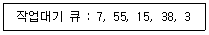
- 3
- 15
- 38
- 55
(정답률: 79%)
72. 디스크 공간 할당 기법 중 연속할당에 대한 설명으로 옳지 않은 것은?
- 연속하는 논리적 블록들이 물리적으로 서로 인접하여 저장된다.
- 파일의 시작 주소와 크기만 기억하면 되므로 파일의 관리 및 구현이 용이하다.
- 파일의 크기가 자주 바뀌는 경우에는 구현이 어렵다.
- 단편화가 발생할 수 없으므로 주기적인 압축이 필요하다.
(정답률: 58%)
73. UNIX에 관한 설명으로 옳지 않은 것은?
- 쉘(shell)은 사용자와 시스템 간의 대화를 가능케 해주는 UNIX 시스템의 매커니즘이다.
- UNIX 시스템은 루트 노드를 시발로 하는 계층적 파일 시스템 구조를 사용한다.
- 커널(kernel)은 프로세스 관리, 기억장치 관리, 입?출력 관리 등의 기능을 수행한다.
- UNIX 파일 시스템에서 각 파일에 대한 파일 소유자, 파일 크기, 파일 생성 시간에 대한 정보는 데이터 블록에 저장된다.
(정답률: 57%)
74. 운영체제의 작업 수행 방식에 관한 설명으로 옳지 않은 것은?
- 하나의 컴퓨터 시스템에서 여러 프로그램들이 같이 컴퓨터 시스템에 입력되어 주기억장치에 적재되고, 이들이 처리장치를 번갈아 사용하며 실행하도록 하는 것을 다중프로그래밍(Multiprogramming) 방식이라고 한다.
- 한 대의 컴퓨터를 동시에 여러 명의 사용자가 대화식으로 사용하는 방식으로 처리속도가 매우 빨라 사용자는 독립적인 시스템을 사용하는 것으로 인식하는 것을 일괄처리(Batch Processing) 방식이라고 한다.
- 한 대의 컴퓨터에 중앙처리장치(CPU)가 2개 이상 설치되어 여러 명령을 동시에 처리하는 것을 다중프로세싱(Multiprocessing) 방식이라고 한다.
- 여러 대의 컴퓨터들에 의해 작업들을 나누어 처리하여 그 내용이나 결과를 통신망을 이용하여 상호 교환되도록 연결되어 있는 것을 분산처리(Distributed Processing)방식이라고 한다.
(정답률: 78%)
75. 다음이 설명하는 디스크 스케줄링 기법은 무엇인가?
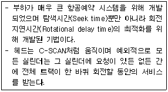
- SSTF 기법
- N-단계 SCAN 기법
- FCFS 기법
- 에션바흐(Eschenbach) 기법
(정답률: 59%)
76. 다음 설명에 해당하는 자원 보호 기법은?
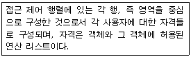
- Global Table
- Capability List
- Access Control List
- Lock/Key
(정답률: 43%)
77. 스레드(Thread)에 관한 설명으로 옳지 않은 것은?
- 스레드는 하나의 프로세스 내에서 병행성을 증대시키기 위한 메커니즘이다.
- 스레드는 프로세스의 일부 특성을 갖고 있기 때문에 경량(light weight) 프로세스라고도 한다.
- 스레드는 동일 프로세스 환경에서 서로 독립적인 다중 수행이 불가능하다.
- 스레드 기반 시스템에서 스레드는 독립적인 스케줄링의 최소 단위로서 프로세스의 역할을 담당한다.
(정답률: 78%)
78. 빈 기억공간의 크기가 20K, 16K, 8K, 40K 일 때 기억장치 배치 전략으로 “Best Fit"을 사용하여 17K의 프로그램을 적재할 경우 내부단편화의 크기는 얼마인가?
- 3K
- 23K
- 64K
- 67K
(정답률: 74%)
79. 파일 디스크립터의 내용으로 옳지 않은 것은?
- 오류 발생시 처리 방법
- 보조기억장치 정보
- 파일 구조
- 접근 제어 정보
(정답률: 81%)
80. UNIX에서 파일 조작을 위한 명령으로 거리가 먼 것은?
- cp
- mv
- ls
- r m
(정답률: 74%)
5과목: 마이크로 전자계산기
81. 다음 매크로(MACRO) 처리기의 동작 과정에 포함되지 않는 것은?
- 매크로정의인식
- 매크로호출인식
- 매크로선언인식
- 매크로매개변수 치환
(정답률: 50%)
82. 베이직과 같은 고급 언어로 작성된 원시 프로그램을 직접 실행하는 프로그램은?
- 로더(Loader)
- 인터프리터(Interpreter)
- 어셈블러(Assembler)
- 기계어(Machine Language)
(정답률: 72%)
83. 8K word의 메모리를 사용하는데 필요한 주소선은 몇 개인가?
- 11
- 12
- 13
- 14
(정답률: 79%)
84. 캐리 플래그가 리셋 되었을 때 어떤 무부호 2진수를 곱셈 명령을 사용하지 않고 2로 곱하는 효과를 갖고 있는 명령어는?
- shift right
- shift left
- exclusive OR
- rotate right
(정답률: 87%)
85. 마이크로프로세서(micro processor) 어셈블리 프로그램의 ORG 명령이 사용될 수 없는 것은?
- 프로그램 카운터(program counter)
- 서브루틴(subroutine)
- 램 스토리지(RAM storage)
- 메모리 스택(memory stack)
(정답률: 52%)
86. 다음 중 USART를 제어하기 위한 레지스터가 아닌 것은?
- USART I/O 데이터 레지스터
- USART 타이머 레지스터
- USART 보레이트 레지스터
- USART 제어 상태 레지스터
(정답률: 47%)
87. 어셈블리 언어의 각 줄은 필드(field)라 불리는 3개의 부분으로 구성되는데, 이에 해당하지 않는 것은?
- 라벨
- 선언
- 명령어
- 코멘트
(정답률: 48%)
88. 다음 기억소자 중 기억된 내용을 여러 번 지워서 사용할 수 있는 것은?
- ROM
- PROM
- EPROM
- PLA
(정답률: 78%)
89. 서브루틴과 인터럽트의 차이점은?
- 프로그램 실행에 의해서 처리된다.
- 복귀 번지를 저장하는 방식이 다르다.
- 주프로그램으로 복귀 방식이 다르다.
- 호출방식이 다르다.
(정답률: 73%)
90. 어떤 RAM 모듈의 액세스 시간이 100bps이고, 한 번에 32bit씩 읽혀질 때 데이터 전송률[Mbps]은?
- 32
- 100
- 320
- 3200
(정답률: 38%)
91. 이항(Binary) 연산을 하는 연산자는?
- increment
- clear
- OR
- shift
(정답률: 74%)
92. second-pass 어셈블러에서 2번째 pass에 사용되는 테이블로서 적합하지 않은 것은?
- MRI(memory reference instruction) 테이블
- 번지 기호 테이블(address symbol table)
- 의사 명령 테이블(pseudo-instruction table)
- 명령 테이블(instruction table)
(정답률: 8%)
93. 비동기식 직렬 전송에서 문자코드의 양 끝에는 start bit와 stop bit의 신호 상태는?
- start bit : low,stop bit : high
- start bit : high,stop bit : low
- start bit : low,stop bit : low
- start bit : high,stop bit : high
(정답률: 69%)
94. 마이크로컴퓨터 시스템과 외부회로 사이의 데이터 전달 입?출력(I/O) 방식이 아닌 것은?
- programmed I/O
- interrup I/O
- DMA(direct memory access)
- paged I/O
(정답률: 63%)
95. CPU 레지스터에 관한 설명 중 옳지 않은 것은?
- CPU로 인출된 명령어 코드를 해석하기 위해 명령어 레지스터(IR)에 넣는다.
- 프로그램 카운터(PC)는 초기치가 주어지고 매번 명령어 코드를 인출할 때마다 새롭게 된다.
- 누산기(accumulator)는 논리 연산 및 수치 연산을 행할 때 사용되는 레지스터이다.
- 지정될 메모리 주소를 기억하기 위한 레지스터를 데이터 카운터(DC)라 하며, 매번 메모리 데이터를 지정할 때마다 새롭게 할 필요가 없다.
(정답률: 73%)
96. 연산기(ALU)가 공통적으로 갖는 기능이 아닌 것은?
- 2진 가?감산
- 불 대수 연산
- 보수 계산
- 주소 지정
(정답률: 81%)
97. 외부 버스에서 ROM에 입력되는 신호라고 볼 수 없는 것은?
- 액세스(access)할 기억장치 워드(memory word)주소
- 읽기(read)신호
- ROM과 CPU를 동기시키는 클럭신호
- 쓰기(write)신호
(정답률: 53%)
98. 명령어에서 op-code 다음에 실제 오퍼랜드(operand) 값이 오는 주소지정방식은?
- direct addressing
- immediate addressing
- implied addressing
- indexed addressing
(정답률: 47%)
99. 마이크로 전자계산기를 구성하는 버스가 아닌 것은?
- 주소 버스
- ALU 버스
- 제어신호 버스
- 데이터 버스
(정답률: 67%)
100. 자기 디스크에서 디스크의 읽기/쓰기 작업이 이루어지는 최소 단위는?
- 디스크 팩
- cylinder
- track
- sector
(정답률: 57%)